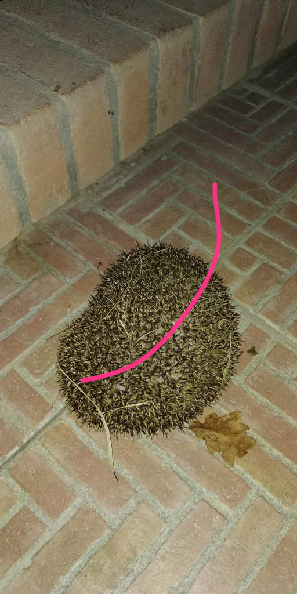

Il tool Konvid-19 è stato realizzato sulla base delle indicazioni fornite dalle seguenti pubblicazioni:
Transmission of SARS-CoV-2: implications for infection prevention precautions
Physical distancing, face masks, and eye protection to prevent person-to-person transmission of SARS-CoV-2 and COVID-19: a systematic review and meta-analysis
Temporal dynamics in viral shedding and transmissibility of COVID-19
SARS-CoV-2 detection, viral load and infectivity over the course of an infection
Modeling the role of respiratory droplets in Covid-19 type pandemics
La montagna
Il riccio esponenziale
